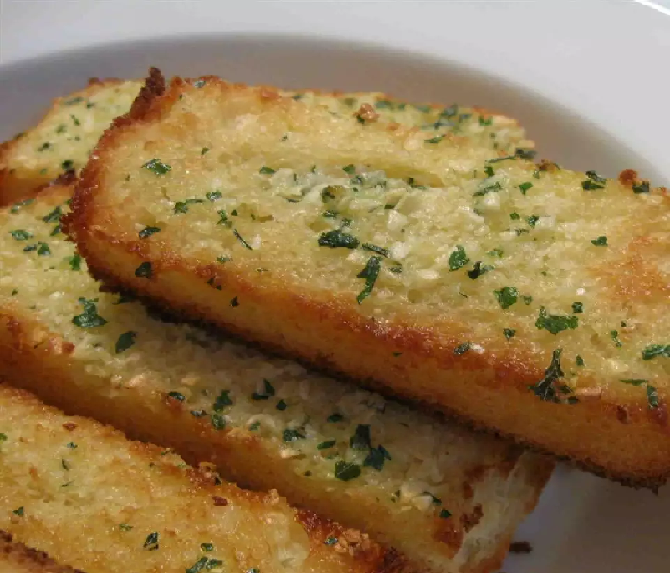

Grilled Garlic Bread

Here is a savory grilled garlic bread recipe that's easy to make.
Ingredients:
- 2 tablespoons butter, softened
- 1 clove garlic, crushed
- 2 tablespoons grated Parmesan cheese
- ground black pepper to taste
- ¼ large baguette, sliced
- 1 teaspoon chopped fresh parsley, or to taste
- Preheat a grill to high heat.
- Mix together butter, garlic, Parmesan cheese, and pepper in a bowl.
- Spread the butter mixture generously on the baguette slices.
- Place slices on the preheated grill and cook until butter is melted and bread is lightly brown, about 30 seconds.
- Sprinkle with parsley and serve immediately.
Homepage